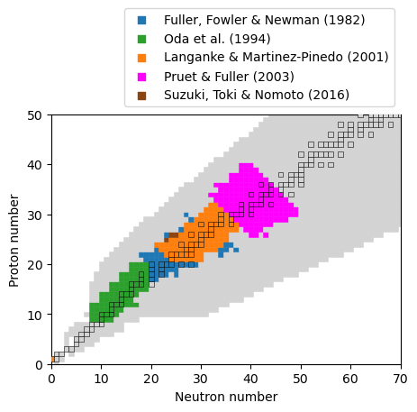

alpha_decays.dat
- Contains:
- Name of the alpha-decaying nucleus as well as alpha-decay half-life. The values have been calculated according to:
\[ \log_{10}T_\alpha = (aZ + b)Q_\alpha^{-0.5} + (cZ + d)+h_{log} \]
with certain fit parameters. The parameters are chosen as follows:
| a | b | c | d |
| \(Z>82\), \(N>126\) | 1.64062 | -8.54399 | -0.19430 | -33.9054 |
| \(Z>82\), \(82<N\le126\) | 1.71183 | -7.50481 | -0.25315 | -30.7028 |
| \(50<Z\le 82\), \(82<N\le126\) | 1.70875 | -7.52265 | -0.25153 | -30.8245 |
| \(50<Z\le 82\), \(50<N\le82\) | 1.71371 | -7.34226 | -0.24978 | -30.6826 |
| h1 | h2 | h3 | h4 |
| \(Z>82\), \(N>126\) | 0 | 0.8937 | 0.5720 | 0.9380 |
| \(Z>82\), \(82<N\le126\) | 0 | 0.0476 | 0.1214 | 0.3933 |
| \(50<Z\le 82\), \(82<N\le126\) | 0 | 0.2140 | 0.0600 | 0.4999 |
| \(50<Z\le 82\), \(50<N\le82\) | 0 | -0.1242 | 1.1799 | 0.7166 |
The lower part of the table shows the hindrance factors \(h_{log}\) and h1 indicates Z even and N even, h2 Z even and N odd, h3 Z odd and N even, h4 Z odd and N odd. Masses that are necessary to calculate the Q-value were taken from the winvn file.
- Relevant parameters
- use_alpha_decay_file , alpha_decay_file
- Literature
- Reichert et al. 2023, Dong & Ren 2005
- See also
- Viola & Seaborg 1966
- Useful scripts
- create_alpha_decay_file.py
beta_decay_marketin.dat
- Contains:
- File with half lifes and beta-delayed neutron emission probabilities (P0,...P10n), average Q-value, and average energy of released neutrinos of the decay.
- Relevant parameters
- use_beta_decay_file , beta_decay_file , heating_mode
- Literature
- Marketin et al. 2016
- Useful scripts
- convert_marketin_beta_decays.py
beta_decay_moeller.dat
File with half lifes and beta-delayed neutron emission probabilities (P0,...P10n).
- Relevant parameters
- use_beta_decay_file , beta_decay_file
- Literature
- Moeller et al. 2019
beta_decay_reaclib.dat
- Contains:
- File with half lifes and beta-delayed neutron emission probabilities (P0,...P10n).
- Relevant parameters
- use_beta_decay_file , beta_decay_file
- Literature
- Cyburt et al. 2010
chem_table.dat
- Contains:
- Tabulated chemical potential of electron-positron gas taken from the Helmholtz equation of state.
- Relevant parameters
- chem_pot_file , use_timmes_mue
- Literature
- Timmes & Arnett 1999, Cococubed
datafile2.txt
- Contains:
- Tabulated partition functions exceeding 10 GK for the FRDM mass model.
- Relevant parameters
- htpf_file , use_htpf
- Literature
- Rauscher 2003
FISS_Mumpower
- Contains:
- Fission fragment distribution for neutron-induced and beta delayed fission.
- Relevant parameters
- fissflag , nfission_file
- Literature
- Mumpower et al. 2020
fissionrates_beta_delayed_mp22
- Contains:
- Fission rates of beta-delayed fission as given in Mumpower et al. 2022 for the FRLDM fission barriers given in Moeller et al. 2015. The rates are given in probabilities of the total beta decay where each column represents one channel of decay (i.e., P0n, P1n, ...).
- Relevant parameters
- fissflag , fission_rates_beta_delayed, fission_format_beta_delayed
- Literature
- Mumpower et al. 2022, Manuscript supplemental
- Useful scripts
- create_mumpower_bdf_file.py
fissionrates_beta_delayed_pa05
- Contains:
- Fission rates of beta-delayed fission as given in Panov et al. 2005 for the Thomas-Fermi fission barriers given in Myers & Swiatecki 1999. The rates are given in probabilities of the total beta decay.
- Relevant parameters
- fissflag, fission_rates_beta_delayed, fission_format_beta_delayed
- Literature
- Panov et al. 2005
fissionrates_spontaneous
- Contains:
Fission rates of spontaneous fission which were calculated using the semi-empirical formula given in Khuyagbaatar 2020 with the fission barriers of Moeller et al. 2015.
- Relevant parameters
- fissflag, fission_rates_spontaneous, fission_format_spontaneous
- Literature
- Khuyagbaatar 2020
- Useful scripts
- create_spontaneous_fission_file.py
fissionrates_n_induced
- Contains:
Fission rates of neutron induced fission as given in Panov et al. 2010 for the FRDM mass model.
- Relevant parameters
- fissflag, fission_rates_n_induced, fission_format_n_induced
- Literature
- Panov et al. 2010, Vizier database
frdm_sn.dat
- Contains:
- Table with neutron separation energies with the FRDM mass model.
- Relevant parameters
- calc_nsep_energy , nsep_energies_file
stable_isotopes.txt
- Contains:
- List that contains mass number, atomic number, and neutron number of stable isotopes.
- Relevant parameters
- -
neunucleons.dat
- Contains:
- Tabulated neutrino reactions as well as average energies of the absorped neutrinos on neutrons and protons.
- Relevant parameters
- nuflag , nunucleo_rates_file
- Literature
- Burrows et al 2006 Horowitz 2002
- See also
- Burrows & Thompson 2002
- Useful scripts
- create_neutrino_nucleon_file.py
nu_channels
- Contains:
- Channels of neutrino reactions. Both, charged current and neutral current channels are included.
- Relevant parameters
- nuflag , nuchannel_file
- Literature
- Sieverding et al. 2018
nucross.dat
- Contains:
- Neutrino reactions on heavy nuclei. Both, charged current and neutral current channels are included.
- Relevant parameters
- nuflag , nurates_file
- Literature
- Sieverding et al. 2018
nu_loss_data.dat
- Contains:
- Average energy of neutrinos in MeV that are produced in the beta-decay.
- Relevant parameters
- use_neutrino_loss_file , neutrino_loss_file , heating_mode
- Literature
- Brown et al. 2018
- Useful scripts
- create_neutrino_loss_file.py
rateseff.out
- Contains:
- Tabulated weak reactions.
- Relevant parameters
- iwformat , weak_rates_file, temp_reload_exp_weak_rates
- Literature
- Langanke & Martinez-Pinedo 2001
- See also
- Fuller et al. 1985, Oda et al. 1994
Reaclib_18_9_20
- Contains:
- Nuclear reaction rates in reaclib file format.
- Relevant parameters
- reaclib_file
- Literature
- Cyburt et al. 2010
- See also
- https://reaclib.jinaweb.org/
theoretical_weak_rates.dat
- Contains:
- Tabulated weak reactions (electron-/positron- captures and \( \beta \)-decays) from different literatures (see Fig. below)

Included theoretical weak reactions color coded by literature
- Relevant parameters
- iwformat , weak_rates_file, temp_reload_exp_weak_rates
- Literature
- Fuller et al. 1985, Oda et al. 1994, Langanke & Martinez-Pinedo 2001, Pruet & Fuller 2003, Suzuki, Toki & Nomoto 2016
- See also
- Weak rate library, tw_rate_module.f90
winvne_v2.0.dat
- Contains:
- Nuclear properties, such as the spin of the ground state, the mass excess, neutron and proton numbers and tabulated partition functions.
- Relevant parameters
- isotopes_file
- Literature
- Cyburt et al.2010
- See also
- https://reaclib.jinaweb.org/